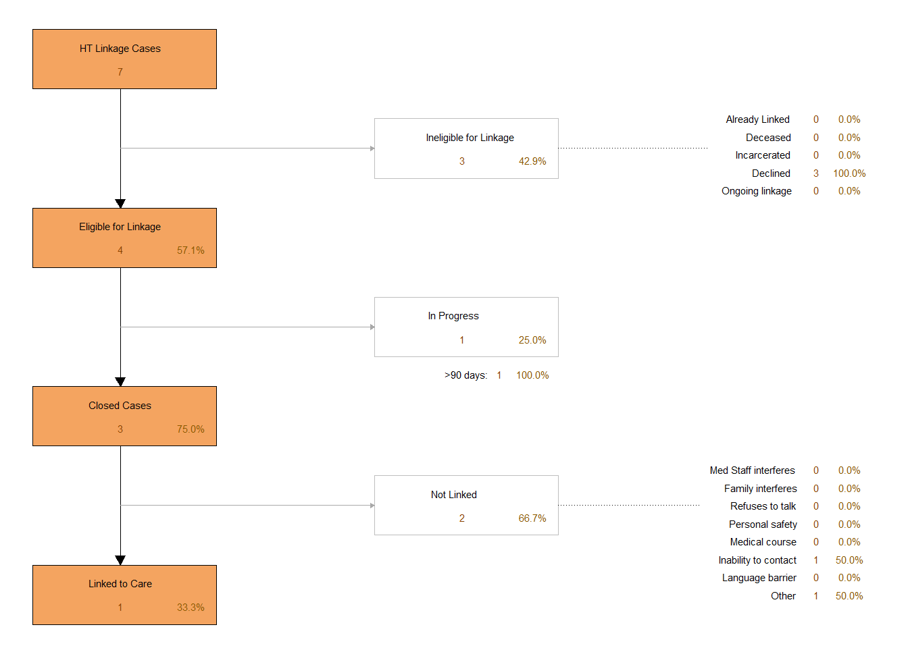

| HT Assessed | % Assessed | HT Assessed (Pulvino) | % Assessed (Pulvino) | Screened HT+ | % HT+ |
|---|---|---|---|---|---|
| 2910 | 58.5% | 1811 | 36.4% | 206 | 11.4% |
Human Trafficking
Screening for HT
EIP officially began screening for human trafficking (HT) within the EIP Database as of December 1st, 2022 with the introduction of Dr. Christa Pulvino’s pilot grant. The EIP assessment has had some general questions that may indicate the risk of an individual being in a HT situation, but new assessment questions were added to indicate a risk for trafficking, as well as the HPA’s general impression of whether the individual was at risk based on additional information. Additional resources for HT were included within the EIP list, and a new, electronic version of the EIP resource list was created that allowed the ability for patients to access the list of EIP resources using a QR code. The data captured for this project is provided on this page, along with additional data that pertains to the HT efforts within EIP.
There are a total of 12387 encounters with EIP, with a total of 4972 assessments completed (40.1% of the total number of encounters). As mentioned above, there are several questions within the EIP assessment that may indicate whether someone is in an at-risk situation for HT. The total number of assessments where at least one of these questions was asked and answered is 2910 (58.5% of the total number of assessments, 2910/4972). The questions that are included in the total assessed for HT (in addition to the questions provided by Dr. Pulvino) are noted below:
- When did you last receive money and/or drugs for sex?
- Do you feel safe in your relationship?
- Does your partner pressure you into having sex?
However, when we only consider those questions that were included with Dr. Pulvino’s HT assessment, the number of assessments where this specific screening was done was 1811 (36.4% of the total number of assessments, 1811/4972). Individuals are considered at risk for HT if they respond ‘Yes’ to any of the questions in this HT assessment. The total number of assessments where an individual screened positive for HT risk is 206 (11.4% of the total assessed using Dr. Pulvino’s assessment, 206/1811). The summary table for HT screening is provided below.
The breakdown of the responses for each question on Dr. Pulvino’s HT assessment are provided in the table below to keep track of which specific questions are being asked and answered, and which ones are of highest note for those who are screening positive.
| Question | # Assessed | Yes | % Yes | No | Not Asked | Declined |
|---|---|---|---|---|---|---|
| Have you ever worked, or done other things, in a place that made you feel scared or unsafe? | 1787 | 133 | 7% | 1654 | 151 | 30 |
| In thinking back over your past experience, have you ever been tricked or forced into doing any kind of work that you did not want to do? | 1765 | 102 | 6% | 1663 | 152 | 31 |
| Have you ever been afraid to leave or quit a work situation due to fears of violence or threats of harm to yourself or your family? | 1755 | 66 | 4% | 1689 | 155 | 28 |
| Have you ever received anything in exchange for sex (for example, a place to stay, gifts, or food)? | 1724 | 126 | 7% | 1598 | 154 | 28 |
Historically, EIP has asked whether an individual has exchanged money and/or drugs for sex. However, these are asked in conjunction with Dr. Pulvino’s question of whether they have ever received anything for sex, not just money or drugs. The response to Dr. Pulvino’s specific question is shown above, but we can also look at the total number of assessments where the individual endorsed receiving anything for sex, whether it was a response to the historical EIP question(s) or the additional question provided by Dr. Pulvino. Looking at the response to all questions related to receiving anything for sex, there were a total of 240 assessments where the individual endorsed receiving anything for sex (8% of all those assessed for HT, 240/2910).
Additional questions that can be evaluated in identifying the risk for HT are whether an individual feels safe in their relationship and whether their partner pressures them into having sex. There were a total number of 1659 assessments where the individual answered the question regarding feeling safe in their relationship, with 229 (14% of all those assessed for this question, 229/1659) stating they do not feel safe in their current relationship. There were a total number of 1555 assessments where the individual answered the question regarding being pressured into sex by their partner, with 69 (4% of all those assessed for this question, 69/1555) stating that they have been pressured into sex by their partner.
Additionally, the EIP staff are asked to document during their encounter whether they had a feeling of whether the individual was a potential risk for HT, regardless of how they answered the questions and based on their overall impression of the encounter as a whole. There were a total of 52 encounters where the EIP staff indicated that they had a feeling the individual was at risk for being trafficked (0.4% of all encounters, 52/12387). The total number of encounters is used as the denominator here (rather than the number of assessments, or those screened for HT risk) because the EIP staff can note their impression of HT risk without completing an assessment. However, we can also look at this total for those that completed an assessment and those that completed HT screening if desired. When looking at it this way, 1.0% of those that completed an EIP assessment were suspected of being in a trafficking situation by the EIP staff (52/4972), while 1.8% of those who were screened for HT were suspected of being in a trafficked situation (52/2910).
For individuals who screened positive for being a HT risk through Dr. Pulvino’s questions, there were 41 assessments where the EIP staff also stated they had the impression that the individual was at risk for being trafficked (19.9% of all those who screened positive for HT, 41/206). There were a total of 1605 assessments where the individual was screened using Dr. Pulvino’s assessment but did not screen positive, and 3 of these where the EIP staff suspected that they may be at risk (0.2% of all those assessed for HT but were not positive, 3/1605).
Resources for HT
Referrals to resources for HT are provided by our EIP health promotion advocates (HPAs) after their encounter with the individual. These resources can be provided whether the individual is screened for their risk of HT or not, and can occur at any time during the individual’s encounter within the emergency department. The total number of encounters where resources were provided to the individual by our HPAs was 2812 (22.7% of all encounters, 2812/12387). In order to ensure that all individuals who are screened, and that screened positive, are able to receive the reosurces they need during that encounter. The total number of encounters where the individual screened positive for HT risk and were provided with resources specifically for HT was 103 (50.0% of all those that screened positive, 103/206). Also, when one of our EIP HPAs suspect HT risk, whether they screened positive or not, they are trained to offer resources that may help. The number of encounters where the individual was suspected of being in a trafficked situation by an EIP HPA and where they were provided with referrals was 43 (82.7% of all those that were suspected of HT risk, 43/52). Finally, the number of encounters where an individual was suspected or screened positive for HT during the assessment and was provided resources was 35 (85.4% of all those that were either suspected of or screened positive for HT risk, 35/41).
HT Linkage to Care
The flowchart of the HT Linkage to Care efforts for EIP are shown below. A linkage case for HT may be started in any situation, and does not require the individual to be screened for HT risk.

EIP Resource Database
With the introduction of screening for human trafficking, EIP established a virtual resource for our services, providing individuals with a way to access and review our resource list anytime using a QR code. This electronic version of the EIP resource list went live on April 19th, 2023. With this electronic version, we are able to analyze which resources visitors review for our services provided in the document, based on what options they select when triggering the QR code. There were a total of 259 queries into the EIP resource list using this QR code, and the particular services they reviewed are shown below.
The table below shows the number of views for each service alone, providing the percentage of the the total number of views (n = 259) for the EIP resource list. In addition, the table provides numbers when considering the times that the individual selected to view all services, since the same resources for the individualized service would be accessible when viewing all services. Therefore, the percentage of the total for each service when combined with the number of views for all services is also shown.
| Resource | Numbers of Views | % of Total | All Services Included | % with All Services |
|---|---|---|---|---|
| All Services | 127 | 49.0% | - | - |
| HIV | 37 | 14.3% | 164 | 63% |
| Substance Abuse | 59 | 22.8% | 186 | 72% |
| Housing | 51 | 19.7% | 178 | 69% |
| Mental Health | 42 | 16.2% | 169 | 65% |
| Human Trafficking | 42 | 16.2% | 169 | 65% |
| Survivors of Abuse | 26 | 10.0% | 153 | 59% |
| Food Services | 36 | 13.9% | 163 | 63% |
| General Health | 25 | 9.7% | 152 | 59% |
| Transportation | 27 | 10.4% | 154 | 59% |